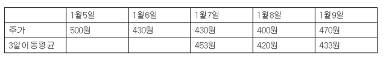

■ 이동평균선
이동평균선이란?
이동평균선을 설명 드리기 전에 일단 그래프를 먼저 보겠습니다. 아래의 그래프를 한번 보십시오.

주가가 들쑥날쑥하지만 자질구리한 변화를 제거하면 붉은선을 따라서 주가가 움직이고 있다는 것을 우리는
쉽게 알 수 있습니다. 그리고 좀더 장기적인 관점에서 보면 주가가 검은선을 따라 움직였다는 것도 알수
있습니다.
이동평균선은 위에 있는 그래프의 붉은선과 검은선을 가리키는 말입니다. 들쑥날쑥한 주가가 평균적으로 어떻게
움직였는지 조사를 한 것이 바로 이동평균선입니다.
이동평균선의 계산방법
이동평균선을 그리는 원리는 간단합니다. 예를 들어 주가가 아래와 같이 움직였다고합시다.

그리고 3일 이동평균선을 그린다고 합시다. 3일 이동평균선을 그리기 위해서 우리는 일단 3일간의 주가평균을
구해야합니다.
꿋꿋하게 계산을 하면 1월 7일의 3일이동 평균은 (500원 + 430원 + 430원)/3 = 453원이
되고, 1월 8일의 이동평균은 (430원 + 430원 + 400원)/3 = 420원, 1월 9일의 이동평균은
(430원 + 400원 + 470원)/3 = 433원이 됩니다.
이렇게 평균값을 구했다면 이동평균선을 그리는 것은 쉽습니다. 위에서 구한 값을 연결만 하면 됩니다.
{kind=link}
이동평균선의 의미
20일 이동평균선은 20일간의 주가를 평균낸 값이고, 60일 이동평균선은
60일간의 주가를 평균낸 값입니다. 토요일, 일요일에는 주식 거래가 이루어지지 않는다는 사실을 고려하면
한달간 사람들이 주식을 사고 판 평균가격이 20일 이동평균이라고 할수 있습니다.
그리고 60일 이동평균은 3달간 사람들이 주식을 사고판 평균가격이라고 할수 있습니다.
따라서 (주)리어커의 20일 이동평균이 450원이라면 지난 한달 간 사람들이 (주)리어커의 주식을 산
평균가격이 450원이라는 뜻이 됩니다.
그리고 60일 이동평균이 500원이라면 지난 3달간 사람들이 (주)리어커의 주식을 산 평균가격이 500원이라는
뜻이 됩니다.
이동평균선 매매기법
1.골든크로스
 골든크로스란
단기 이동평균선이 장기이동편균선을 뚫고 상승하는 것을 가리키는 말입니다.
골든크로스란
단기 이동평균선이 장기이동편균선을 뚫고 상승하는 것을 가리키는 말입니다.
예를 들어 20일 이동평균선이 60일 이동평균선을 뚫고 상승하는 경우에 우리는 골든크로스가 발생했다고
합니다.
이렇게 단기이동평균선이 장기이동평균선을 뚫고 상승하는 것은 중요한 의미가 있습니다. 쉽게 말해서 60일
내내 쪽지시험을 치면 평균 60점을 받는 학생이 있었는데, 최근 20일간은 성적이 60점을 넘어 60.5점→61점→61.5점→62점으로
상승을 했다면 엄청난 사건입니다.
이것은 그 무엇인가가 학생의 잠자던 학구열에 불을 지폈고, 이제 정신차라고 제대로 공부를 시작했다는
이야기가 됩니다. 따라서 앞으로 성적이 쭉쭉빵빵 올라갈 가능성이 많습니다.
주가역시 마찬가지입니다. 60일이동 평균선을 뚫고 20일 이동평균선이 상승하고 있다면 앞으로 주가가
상승할 가능성이 상당히 높습니다. 그래서 사람들이 그 이름도 찬란하게 골든크로스, 즉 황금십자가란 이름을
붙여주었습니다.
2.데드크로스
 데드크로스란
단기이동평균선이 장기이동평균선을 뚫고 하락하는 것을 말합니다.
데드크로스란
단기이동평균선이 장기이동평균선을 뚫고 하락하는 것을 말합니다.
단기이동평균선이 장기이동평균선을 뚫고 하락하는 것에 무시무시하게 죽음의 십자가란 이름을
붙여준 이유는 간단합니다.
그동안 줄기차게 평균 80점을 받던 학생의 평균점수가 최근 몇일 동안 팍팍 낮아지고 있다면 앞으로 시험성적이
더욱더 떨어질 가능성이 매우 높기 때문입니다.
주식 역시 마찬가지입니다. 60일 이동 평균선을 뚫고 20일 이동평균선이 추락하고 있다면 앞으로 주가가
계속 하락할 가능성이 높습니다. 따라서 이때는 주식 구입을 입하는 것을 보류할 필요가 있습니다.